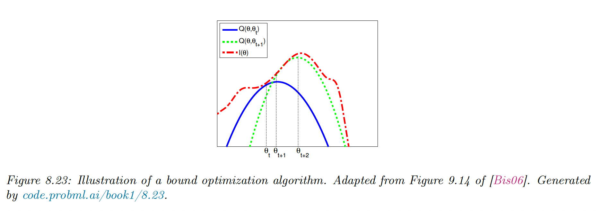
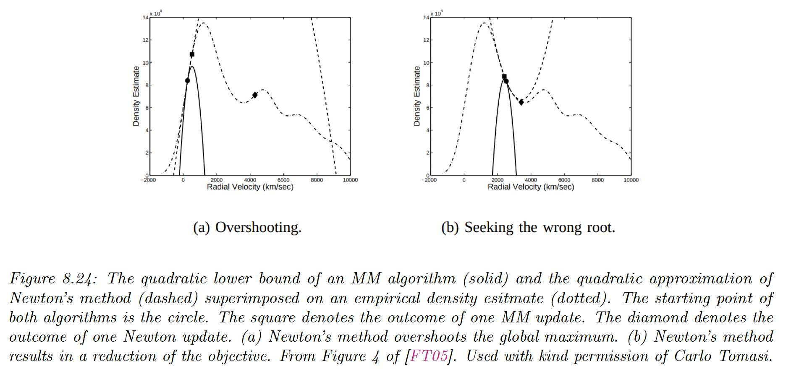
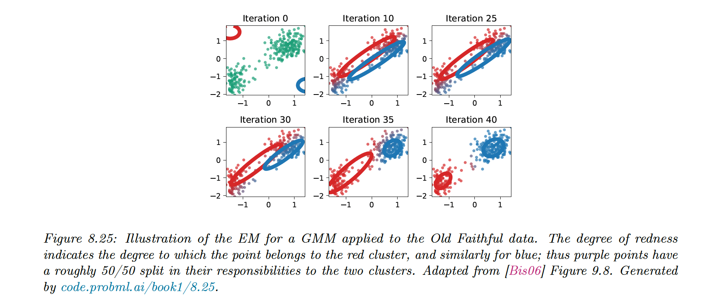

8.7.1 The general algorithm
Our goal is to maximize some function L L ( θ ) LL(\theta) LL ( θ ) Q Q Q
Q ( θ , θ t ) ≤ L L ( θ ) , Q ( θ t , θ t ) = L L ( θ t ) Q(\theta,\theta^t)\leq LL(\theta),\quad Q(\theta^t,\theta^t)= LL(\theta^t) Q ( θ , θ t ) ≤ LL ( θ ) , Q ( θ t , θ t ) = LL ( θ t ) If these conditions are met, we use the update:
θ t + 1 = arg max θ Q ( θ , θ t ) \theta^{t+1}=\argmax_\theta Q(\theta,\theta^t) θ t + 1 = θ arg max Q ( θ , θ t ) This guarantees the monotonic increases of the original objective:
L L ( θ t ) = Q ( θ t , θ t ) ≤ Q ( θ t + 1 , θ t ) ≤ L L ( θ t + 1 ) LL(\theta^t)=Q(\theta^t,\theta^t)\leq Q(\theta^{t+1},\theta^t)\leq LL(\theta^{t+1}) LL ( θ t ) = Q ( θ t , θ t ) ≤ Q ( θ t + 1 , θ t ) ≤ LL ( θ t + 1 ) This iterative procedure will converge to a local minimum of the L L LL LL

If Q Q Q
The difference is that optimizing Q Q Q

8.7.2 The EM Algorithm
8.7.2.1 Lower bound
The goal of the EM is to maximize the log-likelihood:
L L ( θ ) = ∑ n = 1 N log p ( y n ∣ θ ) = ∑ n = 1 N log [ ∑ z n p ( y n , z n ∣ θ ) ] LL(\theta)=\sum_{n=1}^N \log p(y_n|\theta)=\sum^N_{n=1}\log \Big[\sum_{z_n} p(y_n,z_n|\theta)\Big] LL ( θ ) = n = 1 ∑ N log p ( y n ∣ θ ) = n = 1 ∑ N log [ z n ∑ p ( y n , z n ∣ θ ) ] where y n y_n y n z n z_n z n
To push the log \log log q n ( z n ) q_n(z_n) q n ( z n )
L L ( θ ) = ∑ n = 1 N log [ ∑ z n q n ( z n ) p ( y n , z n ∣ θ ) q n ( z n ) ] ≥ ∑ n = 1 N ∑ z n q n log p ( y n , z n ∣ θ ) q n ( z n ) = ∑ n = 1 N E q n [ log p ( y n , z n ∣ θ ) ] + H ( q n ) = ∑ n = 1 N L ( θ , q n ∣ y n ) = L ( θ , q { 1 : N } ) \begin{align}
LL(\theta) &= \sum^N_{n=1}\log \Big[\sum_{z_n} q_n(z_n)\frac{p(y_n,z_n|\theta)}{q_n(z_n)}\Big] \\
&\geq \sum^N_{n=1} \sum_{z_n} q_n\log \frac{p(y_n,z_n|\theta)}{q_n(z_n)} \\
& = \sum_{n=1}^N \mathbb{E}_{q_n}[\log p(y_n,z_n|\theta)] + \mathbb{H}(q_n) \\
& = \sum_{n=1}^N \frak{L}(\theta,q_n|y_n) = \frak{L}(\theta,q_{\{1:N\}})
\end{align} LL ( θ ) = n = 1 ∑ N log [ z n ∑ q n ( z n ) q n ( z n ) p ( y n , z n ∣ θ ) ] ≥ n = 1 ∑ N z n ∑ q n log q n ( z n ) p ( y n , z n ∣ θ ) = n = 1 ∑ N E q n [ log p ( y n , z n ∣ θ )] + H ( q n ) = n = 1 ∑ N L ( θ , q n ∣ y n ) = L ( θ , q { 1 : N } ) Eq 2. used Jensen’s inequality since log \log log ∑ z n q n = 1 \sum_{z_n} q_n=1 ∑ z n q n = 1
L ( θ , q { 1 : N } ) \frak{L}(\theta,q_{\{1:N\}}) L ( θ , q { 1 : N } )
8.7.2.2 E step
We estimate the hidden variables q n q_n q n
L ( θ , q n ) = ∑ z n q n ( z n ) log p ( y n , z n ∣ θ ) q n ( z n ) = ∑ z n q n ( z n ) log p ( z n ∣ y n , θ ) p ( y n ∣ θ ) q n ( z n ) = ∑ z n q n ( z n ) log p ( z n ∣ y n , θ ) q n ( z n ) + ∑ z n q n ( z n ) log p ( y n ∣ θ ) = − D K L ( q n ( z n ) ∣ ∣ p ( z n ∣ y n , θ ) ) + log p ( y n ∣ θ ) \begin{align}
\frak{L}(\theta,q_n) &=\sum_{z_n}q_n(z_n) \log \frac{p(y_n,z_n|\theta)}{q_n(z_n)} \\
&= \sum_{z_n}q_n(z_n) \log \frac{p(z_n|y_n,\theta)p(y_n|\theta)}{q_n(z_n)} \\
&= \sum_{z_n} q_n(z_n)\log \frac{p(z_n|y_n,\theta)}{q_n(z_n)}+\sum_{z_n}q_n(z_n) \log p(y_n|\theta) \\
&= -D_{KL}\big(q_n(z_n)||p(z_n|y_n,\theta)\big)+\log p(y_n|\theta)
\end{align} L ( θ , q n ) = z n ∑ q n ( z n ) log q n ( z n ) p ( y n , z n ∣ θ ) = z n ∑ q n ( z n ) log q n ( z n ) p ( z n ∣ y n , θ ) p ( y n ∣ θ ) = z n ∑ q n ( z n ) log q n ( z n ) p ( z n ∣ y n , θ ) + z n ∑ q n ( z n ) log p ( y n ∣ θ ) = − D K L ( q n ( z n ) ∣∣ p ( z n ∣ y n , θ ) ) + log p ( y n ∣ θ ) We can maximize this lower bound by setting q n ∗ = p ( z n ∣ y n , θ ) q_n^*=p(z_n|y_n,\theta) q n ∗ = p ( z n ∣ y n , θ )
We can define:
Q ( θ , θ t ) = L ( θ , p ( z n ∣ y n , θ t ) ) Q(\theta,\theta^t)=\frak{L}\big(\theta,p(z_n|y_n,\theta^t)\big) Q ( θ , θ t ) = L ( θ , p ( z n ∣ y n , θ t ) ) Then we have Q ( θ , θ t ) ≤ L L ( θ ) Q(\theta,\theta^t)\leq LL(\theta) Q ( θ , θ t ) ≤ LL ( θ ) Q ( θ t , θ t ) = L L ( θ t ) Q(\theta^t,\theta^t)=LL(\theta^t) Q ( θ t , θ t ) = LL ( θ t )
8.7.2.3 M Step
We compute the MLE by maximizing L ( θ , q { 1 : N } t ) \frak{L}(\theta,q_{\{1:N\}}^t) L ( θ , q { 1 : N } t ) θ \theta θ q 1 : N t q_{1:N}^t q 1 : N t t t t
Since H ( q n ) \mathbb{H}(q_n) H ( q n ) θ \theta θ
θ t + 1 = arg max θ ∑ n E q n t [ log ( y n , z n ∣ θ ) ] \theta^{t+1}=\argmax_\theta\sum_n \mathbb{E}_{q_n^t}[\log(y_n,z_n|\theta)] θ t + 1 = θ arg max n ∑ E q n t [ log ( y n , z n ∣ θ )]

{kind=link}
{kind=link}
{kind=link}